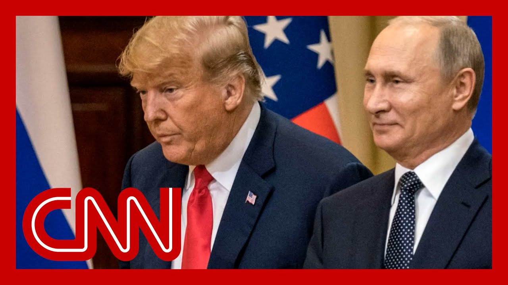

【乌克兰议员：特朗普给普京开了攻击的“绿灯”】
Summary: Ukraine accuses Trump of enabling Putin's aggression, with Trump revealing details of a call where Putin vowed retaliation for Ukraine's strike on Russian airfields, while framing it as a "good conversation" and not condemning the planned response.
摘要： 乌克兰指责特朗普纵容普京的侵略行为，特朗普透露通话细节称普京誓言报复乌克兰对俄空军基地的袭击，却将其描述为“良好对话”，且未谴责俄方的报复计划。

⏱️ Estimated Reading Time: 13 min
📚 高考3500生词 📚 雅思生词 📚 托福生词 📚 GRE生词 📚 UP主自用生词
Ukraine calling it Trump, quote, giving a green lig to Putin to attack them.
乌克兰称特朗普“给普京开了攻击他们的绿灯”。
A senior Ukrainian official tells our Jim Sciutto that just moments ago, after Trump announced to the wor that Russia is about to retaliat against Ukraine, the president of the United Stat revealing details of his long 75 phone call with Vladimir Putin in a post that Trump actually de But then he reposted it an hour later, or unclear what the issue was or what he thought the issue was.
一名乌克兰高级官员告诉吉姆·西乌托，就在特朗普向世界宣布俄罗斯即将报复乌克兰后不久，这位美国总统在帖子中披露了与普京75分钟通话的细节，但特朗普随后删帖，一小时后重新发布，原因不明。
But he says that the Russian lea told him after Ukraine's devastating strike on the Russian Air Force, that there is no chance of a cea Now, today's call marks Putin's first direct response to the attack, although I suppose we should call it indirect because Trump is the one messenger running it.
但他表示，俄领导人在乌克兰对俄空军毁灭性打击后告知他“绝无停火可能”。此次通话是普京对袭击的首次直接回应，尽管实际是间接回应，因由特朗普传达。
Trump called it a, quote, good conversation, saying that Putin's message couldn't have been clear.
特朗普称这是“良好对话”，表示普京的态度“再明确不过”。
Trump tells us about the convers saying, quote, President Putin did say and very strongly that he will have to respond to the recent attack on the airf Now, the president of the United let's be clear, not only announcing Putin's plans for retaliation and not condemning them at all, calling them a counter attack.
特朗普转述称：“普京总统确实非常强硬地表示必须回应近期对空军的袭击。”需明确的是，这位美国总统不仅公布普京的报复计划且未加谴责，反称之为“反击”。
This is new videos and outfront of key moments from the actual strike on those airfields.
这是袭击空军基地关键画面的最新视频。
Ukraine's drones delivering that stunning blow to They obliterated.
乌克兰无人机实施毁灭性打击。
We're told 41 of Putin's planes on the ground there.
据悉地面41架普京的军机被摧毁。
Let's just This is these are military targe It's unmistakable that they are that these are the planes that Putin uses to drop bombs on civilians in Ukraine.
这些明确属于军事目标——正是普京用来轰炸乌克兰平民的军机。
Today, Trump calls Ukraine's act an attack and is just acting like it's the completely normal and right for Putin to respond.
如今特朗普将乌克兰行动称为“攻击”，并默认普京的报复完全合理。
No attempts by Trump's own account of the call. This is his account of the call to deescalate it outright.
根据特朗普对通话的叙述，他未尝试缓和局势。
Now, Kremlin target Andre Soldat He's a Russian investigative jou right now living in exile.
克里姆林宫针对的目标安德烈·索尔达托夫是流亡的俄罗斯调查记者。
He was declared a foreign agent His website does remain blocked in Russia to And Andre, you are the author of the new bo Our Dear Friends in Moscow The Inside Story of a Broken Gen
他被列为外国代理人，网站在俄被封。安德烈是新书《我们在莫斯科的挚友：一个破碎时代的内幕》作者。
So, Andre Putin, tell us, President Trump, this is Trump's description of i very strongly that he will respond to Ukraine taking out the bombers that he uses daily to bomb Ukrai Putin, then later to his cabinet, calls Zelensky a terrorist.
安德烈，特朗普描述称普京“非常强硬”表示要报复乌克兰摧毁其日常轰炸乌方的军机，随后普京在内阁会议上称泽连斯基为“恐怖分子”。
So what do you hear there in terms of what retaliation the world should prepare for?
你认为世界应为何种报复做准备？
Well, of course, first, the Ukrainian attacks was a big game changer, if not on the battlefield, but for the way Putin sees Russian national secu and that he believes that he needs to respond.
首先，乌克兰袭击极大改变了局势——若非战场态势，至少动摇了普京对俄国家安全的认知，他认为必须回应。
Otherwise he would look really w And he wants to look really toug The problem is that he doesn't want to provo So what he wants to do is to get Trump on his side and to help him seeing the situa his way.
否则会显得软弱，而他需要展现强硬。问题是他不愿直接挑衅，因此试图拉拢特朗普认同其立场。
And apparently it works. Well, certainly the way Trump relayed the conversation, Trump did not express that he had said anything would be wrong with Putin doing that.
显然奏效了。从特朗普转述看，他未对普京的行动提出异议。
And that is certainly the case. And disappointed that Trump post he pulled this post back and then he posted it again.
事实如此。令人失望的是特朗普删帖后又重新发布。
So, Andre, there's talk tonight also of a Kremlin led witch hunt Basically Putin looking for who you know, possibly helped Ukraine's attack.
安德烈，今晚还有克里姆林宫主导“猎巫行动”的说法——普京在追查可能协助乌克兰袭击的内应。
Do you have any idea right now from your reporting, who the Kremlin is targeting?
根据你的报道，克里姆林宫目前针对谁？
Well, right now the idea is to accuse the Ukrainians of being terrorists.
当前策略是指控乌克兰人为恐怖分子。
And that was a matter of putting an ad out, as I mentioned before, the minis was that the attacks on our forces coincided with attacks on trains.
正如我之前所述，俄方宣称袭击俄军与袭击火车同时发生。
So Putin wanted today to talk only about trains. He never mentioned, Ukrainian attacks on on official But nevertheless, he made his point that all Ukrai who attacked Russia are terroris
普京今日只谈火车遇袭，绝口不提乌克兰对官方目标的打击，但仍强调所有袭击俄方的乌克兰人都是恐怖分子。
And that is, of course, a very strong signal.
这无疑是强烈信号。
So, Andre, your new book. I've got it here. Our dear friends in Moscow, And in it. you know, you've got this empty wine bottle here on the front.
安德烈，你的新书《我们在莫斯科的挚友》封面有个空酒瓶。
I mean, you talk about a breakdown in Russia You write candidly about Putin's grip on the country, and you write about a moment that actually happened on Larry
书中坦率描写普京对国家的掌控，还提到曾在拉里·金节目中的真实事件。
So this may surprise a lot of pe A Vladimir Putin actually went o Larry King and Larry King asked Putin about the submarine disaster, right.
这或让许多人惊讶——普京曾接受拉里·金采访，被问及潜艇事故。
That that was that was a horrific disaster and in which 118 Russian soldiers on board were k and that they had, you know, des were tapping on the edge, trying to be saved. And they die It was a horrible thing.
这场惨剧导致118名俄士兵丧生，他们曾敲击船体求救却最终死亡。
Here's the exchange between Larry King and Vladimir What happened? You tell me what happened with the submarine And I'll tell you, it sunk.
拉里·金与普京的对话：“潜艇发生了什么？”“它沉了。”
And then there's there's this pa and then that smile. That smile. Andre, you were watching that in You were in Russia with friends, and you write about the reaction in the room in your book, and you write this.
随后普京露出微笑。安德烈，你当时在俄罗斯与朋友观看，书中描写了现场反应。
You write. Putin's answer shocked us, combined with his grin. It felt like the most cynical re that a president, a head of stat could possibly have to that state's failure to save its sailors.
“普京的回答与微笑令我们震惊，这是国家元首对未能拯救士兵的最冷漠回应。”
We could hardly believe what we'd heard him say. And then you continue to talk about someone in the roo You write, then Marina exploded.
“我们难以置信。随后玛丽娜爆发了：‘这美国人怎敢如此无礼质问普京？’”
How dare this American ask Putin about Kursk in such a disrespectful day way well done for Putin for cutting That's our Saint Peter's Berg wa Tell him to go F himself.
“普京怼得好！这是我们圣彼得堡人的作风！让他滚蛋！”
And you say that night was probably the very first time it dawned on us that we didn't completely understand our friend And now here we are.
“那晚我们首次意识到并不完全了解这位朋友。”
Andre, what is Putin's true standing right now in Russi As you see it?
安德烈，你认为普京目前在俄真实地位如何？
Well, unfortunately, it's very s And it's built on the feeling which was shared by many Russians back in the late 1990s and the beginning of the 2000.
很不幸，其地位仍稳固，根基是90年代末21世纪初许多俄民众的共同感受。
Vowed to counter, was humiliated by the West that the country needed a strong to fix it and to weigh as a way to fix tha stand well and to find Americans
“曾被西方羞辱的国家需要强人扭转局面，而对抗是修复尊严并与美国平起平坐的方式。”
So you've been always, having this, head and laugh while relationship between Russia and the United States, because Russia wanted to have th of superpower, and Russia could get this status only from the United States.
俄美关系始终是“边对抗边笑”，因俄渴望超级大国地位，而此地位需美国认可。
A lot of people understood that and still understand that. And it is, in a way, a basis of, have huge support Putin still enjoys in the country.
许多人过去和现在都明白这点，这某种程度上仍是普京在国内获巨大支持的基础。
Congressman, really appreciate y I want to start with, the president's phone call with President Putin today in his Truth Social post, laying kind of the top lines from that including the Putin quote, will have to respond to Ukraine, I think was striking about it was not that there's going to be a response.
议员先生，首先想请教特朗普今日在Truth Social发布与普京通话要点，包括普京称“必须回应乌克兰”。
I think there's been an expectat of that. But that there was no what wasn't in there was a condemnation of any potential action or an effort to try and get him
令人震惊的不是报复本身可预见，而是特朗普未谴责潜在行动或劝阻普京。
Why do you think that was? Well, I think throughout, term, he's been trying to get this conflict and to get Vladimir Putin, to st
你认为原因何在？我认为他任内一直试图结束冲突并让普京停手。
Let's be very clear. Vladimir Putin is a vile dictator and thug. he is solely responsible for this conf and what has happened over the last three, plus years and the death and destruction that has been wrought.
必须明确：普京是卑鄙的独裁暴徒，要对这三年多的冲突及造成的死亡破坏负全责。
and frankly, I thought it was extremely impre what Ukraine was able to pull of the other day, and obviously the that it had on Russia's military, equipment.
坦率说，乌克兰近日行动及其对俄军装备的打击令人印象深刻。
So there is, you know, obviously a real need for this conflict to come to an end.
显然这场冲突亟需结束。
obviously, the president has bee over the last few months to get a negotiation, between Russia and Ukraine to bring this to an end, because the reality is that we're basically at a stalemate h and the longer that this war per the more likely it is, that Ukraine would, ultimately c
过去几个月总统推动俄乌谈判，因现实是战局僵持，拖延越久乌克兰越可能最终让步。
And that would be catastrophic, for Europe, for Eastern Europe and the United States and our al So getting this conflict to an end is critical.
这对欧洲、东欧、美国及盟友将是灾难，因此结束冲突至关重要。
I think obviously, we need to do everything we can Putin from taking any, further a however, congressional sanctions
我们需全力阻止普京进一步行动，但国会制裁...
What do you want? Look, I support, enhanced sancti I'm a co-sponsor of the legislat to do that.
你主张什么？我支持加强制裁，是相关法案联署人。
Frankly, that is something the Biden administration should have done right out of th there should have been secondary sanctions.
坦白说拜登政府应早实施二级制裁。
The Europeans should have ceased purchasing Russian gas. There's a lot that should have b in the three years leading up to this administratio taking over.
欧洲应停止购买俄天然气，本届政府上任前三年的许多措施本应更早实施。
but I certainly believe fundamentally that both this administration and Congress need to act. Vladimir Putin needs to be stopp dead in his tracks.
但我坚信本届政府与国会需行动，必须彻底阻止普京。
and what he has done throughout the course of this three year, war, is nothing short of genocide.
他三年战争中的行为无异于种族灭绝。